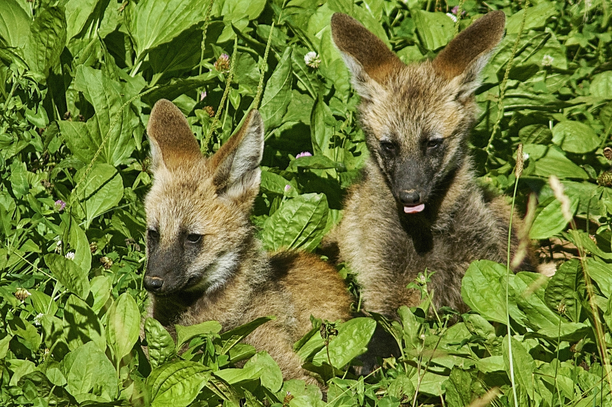

O lobo-guará é o maior canídeo da América do Sul, podendo pesar até 36 kg. É um animal conhecido por suas pernas longas e seu pelo dourado. É considerado o símbolo do Cerrado, apesar de ocorrer em outros biomas.
Classe: Mammalia
Ordem: Carnivora
Família: Canidae
Gênero: Chrysocyon
Espécie: Chrysocyon brachyurus
Nome comum: Lobo-guará, Lobão, Lobo-de-crina, Lobo-vermelho, Guará.
Considerado como “quase ameaçado” pela IUCN, as populações de lobo-guará vêm sofrendo um declínio significativo ao longo dos anos. É preciso entender como as alterações da paisagem, causadas pela expansão urbana, afetam as populações de lobos-guarás para poder atuar de forma a reduzir o impacto dessas mudanças e a propor novas estratégias de conservação. Sugere-se que esta espécie está expandindo a sua distribuição em algumas regiões, o que pode representar uma fuga das áreas nas quais seu habitat original está sendo destruído.
Os estudos realizados por meio do monitoramento direto e dos dados obtidos pelos rádio-colares nos permitem entender suas áreas de vida, territórios e hábitos. Essas análises também são úteis na tomada de ações para a conservação da espécie.
Entendemos que o ecoturismo, aliado à educação ambiental e à pesquisa científica, é uma das principais e mais poderosa ferramenta para reverter o avanço das ameaças. Com a valorização dos lobos em vida livre, construímos pontes entre a ciência e a população, gerando resultados práticos que beneficiam a comunidade local e a vida selvagem.
As três ameaças principais para a espécie são a descaracterização ambiental/ perda de habitat (redução da qualidade de áreas adequadas à sobrevivência), a perda de indivíduos devido a conflitos com humanos (caça) e os atropelamentos.
Estima-se que a espécie sofrerá uma redução populacional de, pelo menos, 29% nos próximos 21 anos (3 gerações), considerando apenas a perda de habitat. Essa estimativa está embasada em uma taxa média de desmatamento do Cerrado de 1% ao ano (dados de desmatamento 2002). Essa perda na população coloca a espécie na categoria “vulnerável” (VU) no Cerrado.
É o maior membro da família Canidae (a mesma dos cachorros e das raposas) na América do Sul. Seu nome científico é Chrysocyon brachyurus, que significa “cachorro dourado da cauda curta”. A alcunha de “guará” vem do Tupi, “pelo de penugem”, por não possuir uma subcamada na pelagem no corpo.
Pode atingir entre 95 e 115 cm de comprimento do corpo, de 35 a 50 cm de cauda e 90 cm de altura da cernelha. Pesa entre 20 e 36 kg, não havendo diferenças significativas entre machos e fêmeas.

Possui orelhas bem grandes, semelhantes a algumas raposas. Apesar de ser chamado de lobo, ele possui uma genética distinta da dos demais membros da família. É considerado como a única espécie viva pertencente ao grupo, por isso não é classificado como lobo “verdadeiro”, nem cachorro, raposa, coiote e chacal. Os parentes mais próximos dos lobos-guarás na escala evolutiva são os cachorros-vinagre (Speothos venaticus), embora sejam morfologicamente muito distintos entre si.
A coloração do corpo varia do vermelho-dourado ao laranja, sendo que os pelos da crina, das patas e do focinho são pretos. Possui um tufo esbranquiçado na ponta da cauda, característica já presente nos filhotes desde que nascem. Também tem uma mancha branca sob a garganta. Pelos compridos ao longo do corpo, em especial na nuca, formam um tipo de crina, que é erétil, muitas vezes usada para aumentar o seu perfil quando se sente ameaçado ou para se exibir. Possui corpo esguio, além de longas e finas pernas, provavelmente uma adaptação por causa do deslocamento em áreas abertas, cobertas por gramas altas.
Sua vocalização é bem característica e é chamada de “aulido”. Mais estudos são necessários, mas, ao que tudo indica, vocaliza com maior frequência em determinadas épocas do ano, que podem estar relacionadas com o período reprodutivo. Os aulidos ecoam por longas distâncias e muitas vezes são respondidos por outro lobo, revelando que essa é uma importante forma de comunicação nesta espécie.
O lobo-guará é considerado monogâmico. No entanto, raramente os parceiros se encontram fora do período de reprodução. Ainda assim, estudos genéticos com animais de vida livre revelaram evidências de fêmeas gerando filhotes de outro macho. O casal, em geral, compartilha a área de vida e, no início do período de acasalamento, começa a se comunicar por meio de vocalizações, odores corporais, fezes e urina. Estudos revelam que os machos ajudam a criar os filhotes, porém a fêmea consegue controlar o quanto ele participa desse processo. Maiores informações sobre o cuidado parental ainda é desconhecido em animais de vida livre. Existe uma tolerância entre os pais e os jovens até o primeiro ano, depois disso os jovens se dispersam para fora do território dos pais, principalmente os machos. O lobo-guará utiliza as marcações (urina, fezes) para delimitar seu território, o qual patrulha durante a noite, e tenta evitar potenciais invasores, embora a espécie possa apresentar uma certa tolerância com outros indivíduos em áreas com alta disponibilidade de recursos.
A espécie tem hábitos noturnos, com maior pico de atividades no crepúsculo e na alvorada, contudo esse comportamento está mais ligado à temperatura e umidade. Em dias mais frios e nublados, ela é capaz de estender as atividades de deslocamento e caça ao longo do dia. Em dias de temperaturas mais altas, passa horas deitada no mesmo lugar, alternando com deslocamentos curtos durante esses horários. Ao contrário de outros grandes canídeos, o lobo-guará não forma uma matilha. Ele caça sozinho, rotaciona as grandes orelhas em direção aos movimentos de sua presa, ataca com um pulo e depois captura com as mandíbulas.
É um animal muito bem adaptado ao Cerrado, utiliza os campos abertos para deslocar-se (de modo muito silencioso) e caçar. Áreas de florestas fechadas são esporadicamente utilizadas para descanso, mas existe uma preferência por dormir, durante o dia, em regiões de capim alto ou moitas. Além disso, em matas mais densas, pode estar mais exposto à predação por grandes felinos (onças-pintadas e onças-pardas).
Utiliza estradas e cupinzeiros espalhados para marcar o território, defecando e urinando nesses lugares, de maneira bem visíveis. Ou seja, seus vestígios (fezes e pegadas) são encontrados com facilidade nas áreas em que ocorre. O odor da sua urina é bem forte e característico, podendo ser sentido dias após o animal ter urinado no local.
O lobo-guará é monogâmico, ou seja, o par se encontra, de preferência, durante o período de reprodução, que ocorre entre abril e junho. Geralmente, divide uma parte do seu território com o parceiro e, no início do período de acasalamento, o casal começa a se comunicar por meio de vocalizações, odores corporais, fezes e urina. A gestação dura em média 65 dias, nascendo de um a sete filhotes. Os filhotes nascem com a pelagem bem escura, quase preta, mas com a ponta da cauda branca, característica mantida durante toda a vida. Gradualmente mudam de cor, à medida que crescem, perdendo a coloração escura com, mais ou menos, dez semanas de vida. Eles mamam por cerca de quatro semanas e depois passam a comer alimentos regurgitados pela mãe ou pelo pai. Acompanham a mãe e aprendem a caçar a partir dos 3 meses. As tocas, em geral, são localizadas em arbustos densos ou campos limpos, com grama alta moldada. Estudos em cativeiro revelam que os machos ajudam a criar os filhotes, porém a fêmea consegue controlar o quanto ele participa desse processo. O cuidado parental em animais de vida livre ainda é pouco conhecido. A prole, normalmente, deixa o território dos pais ao completarem 1 ano de idade, quando atingem a maturidade sexual.

É uma espécie carnívora generalista (onívora) e possui a característica de ser oportunista. A dieta varia sazonalmente, de acordo com a disponibilidade de cada alimento na área, alimentando-se na maior parte das vezes de frutos, pequenos vertebrados, insetos e ovos, porém pode incluir em sua alimentação presas de maior porte, como veados-campeiro, raposas-do-campo e emas, embora a predação de grandes animais seja rara. Pode ser encontrado forrageando em áreas de lavoura, em busca de pequenos mamíferos e aves. Isso pode expor os lobos-guarás a acidentes com maquinários agrícolas e à contaminação por agroquímicos usados nessas plantações.
Suas características anatômicas conferem a habilidade de caçar presas mesmo em ambientes de capim alto, predominantes em seu habitat. Apresenta uma estratégia de caça solitária, não existindo registros de caça cooperativa em vida livre.
Um importante recurso alimentar é a Lobeira (Solanum lycocarpum), uma árvore que produz um fruto que ocorre durante o ano todo, principalmente no Cerrado. O lobo-guará consome grandes quantidades de frutos e elimina as sementes intactas nas fezes, o que faz desta espécie um importante dispersor de sementes.
O lobo-guará é um canídeo endêmico da América do Sul, ou seja, ocorre só na porção sul do continente americano. Estima-se que a sua distribuição esteja localizada apenas no Paraguai, no Brasil, na Argentina e nas planícies bolivianas. No Uruguai, o último indivíduo visto foi registrado em 1990.
É comum encontrar esta espécie em ambientes naturalmente abertos, com maior densidade de gramíneas e arbustos, em geral com árvores esparsas, como nas regiões de Cerrado, Pampas e Chaco. É possível encontrá-los também em outras regiões, como o Pantanal e a Mata Atlântica, porém é muito raro. Existem alguns registros de lobo-guará em regiões de transição entre o Cerrado e a Amazônia e entre o Cerrado e a Caatinga.
Possui uma área de vida que varia de 40 a 123 km², dependendo de fatores como época do ano, disponibilidade de presas e características do bioma. Alguns estudos indicam que as áreas de vida de fêmeas são maiores que as de machos; as fêmeas também podem reduzir significativamente sua área de vida quando estão com filhotes pequenos.